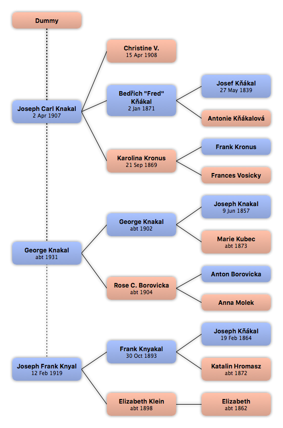

Home
Home
 Persons
Persons
 Families
Families
 Sources
Sources
 Statistics
Statistics
Dummy

Context

Parents
| Father | Date of Birth | Mother | Date of Birth |
|---|
Partners & Children
| Partners | Date of Birth | Children |
|---|---|---|
 Joseph Carl Knakal Joseph Carl Knakal
|
2 Apr 1907 | |
|
George Knakal
|
abt 1931 | |
|
Joseph Frank Knyal
|
12 Feb 1919 |
Events
Facts
Media
Note
Sources
Kinships
| Name | Degree of Kinship | Date of Birth | Place of Birth | Date of Death | Place of Death |
|---|---|---|---|---|---|
| Partners | |||||
| Partner or Husband | 2 Apr 1907 | Culpeper, Catalpa, Virginia | 1994 | Culpeper, Catalpa, Virginia | |
| Partner or Husband | 12 Feb 1919 | Chicago, Cook, Illinois | 12 Feb 1992 | Illinois | |
| Partner or Husband | abt 1931 | New York | |||